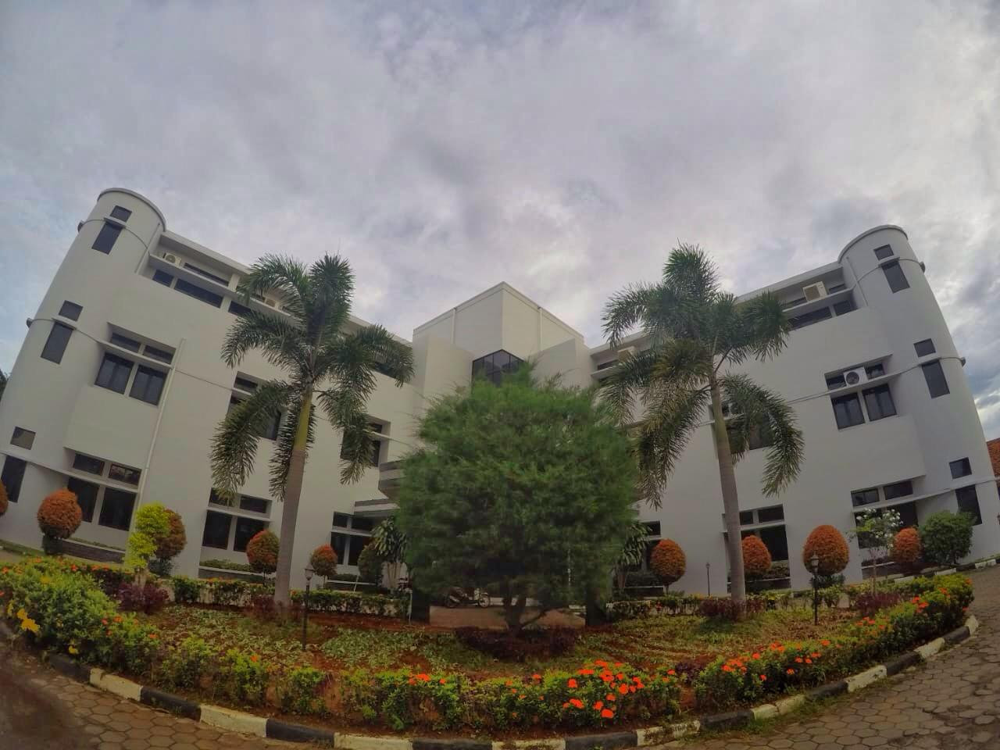
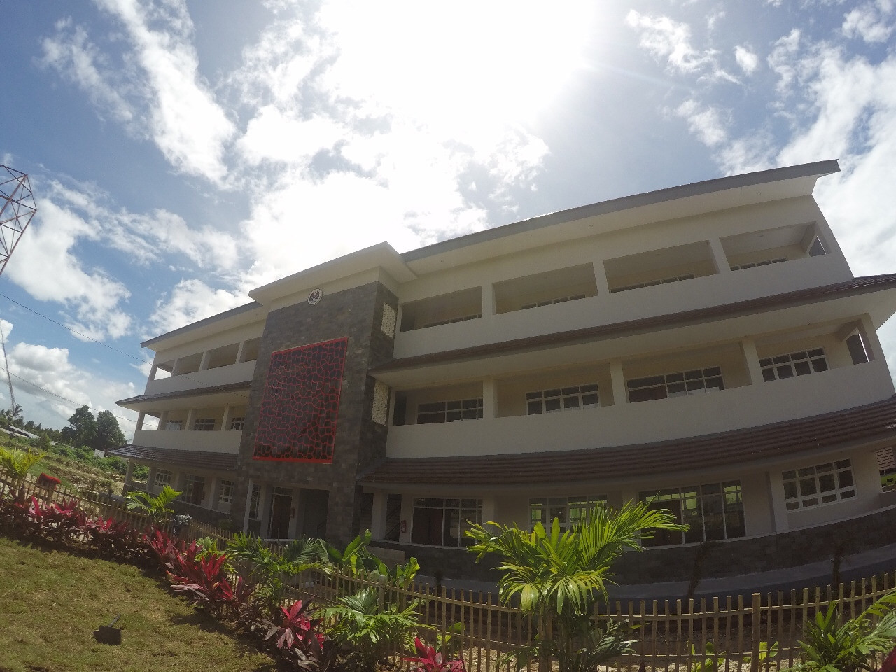
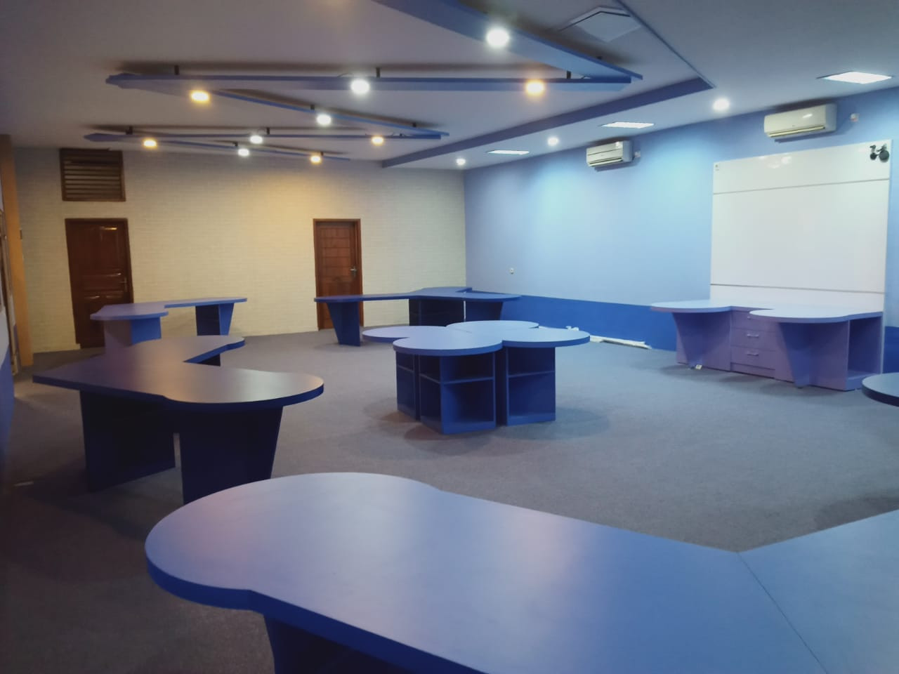
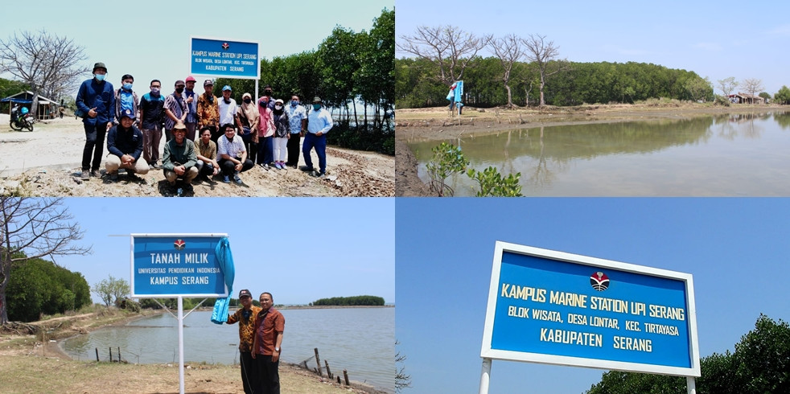
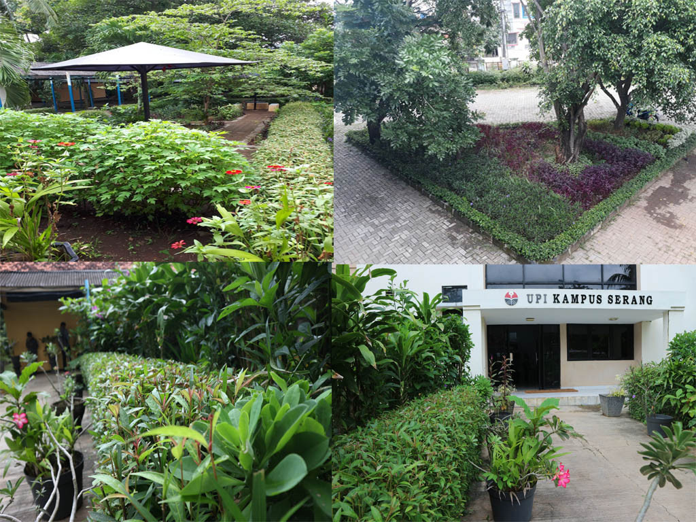

Sistem Informasi Kelautan
Sistem Informasi KelautanSarana dan Prasarana
1 / 6

Gedung Administrasi UPI Kampus Serang
2 / 6

Gedung Perkuliahan UPI Kampus Serang
3 / 6

Laboratorium Komputer UPI Kampus Serang
4 / 6

Perpustakaan UPI Kampus Serang
5 / 6

Marine Station UPI Kampus Serang
6 / 6

Taman UPI Kampus Serang